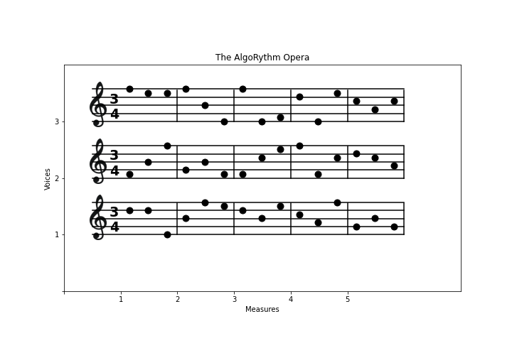
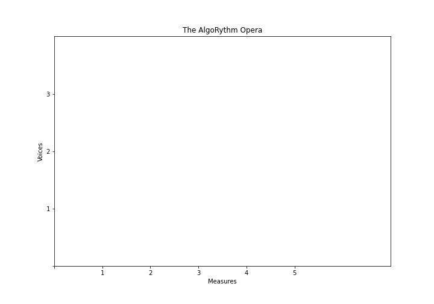
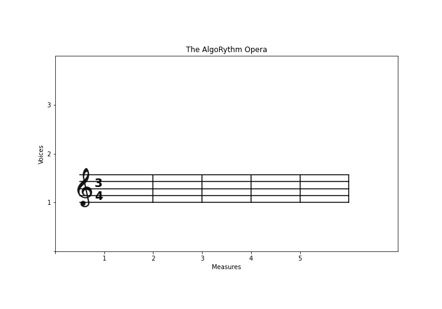
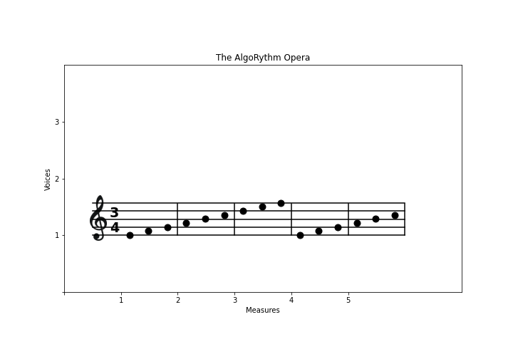
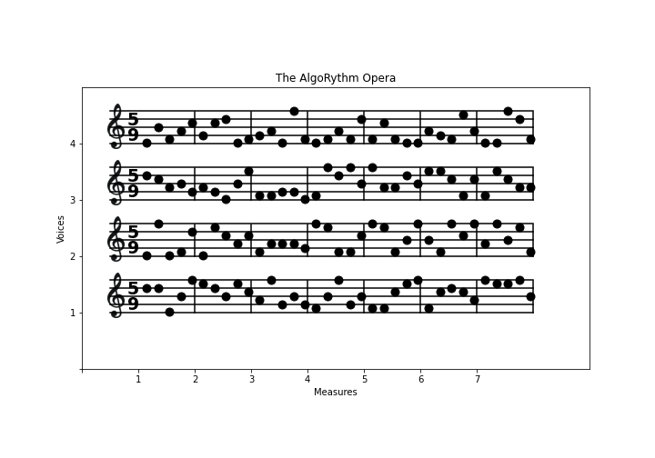

Matplotlib Challenge#
Download exercises zip#

Some people say music is not important, pupils should do math instead. Let’s show them music is math.
A musical sheet is divided vertically in voices. Each voice has a pentagram divided in measures (or bars, or battute in italian), each having a number of beats indicated by its time signature, like \(\large \substack{3\\4}\)
Simple time signatures consist of two numerals, one stacked above the other:
The upper numeral
time_sig_num(3) indicates how many such beats constitute a barThe lower numeral
time_sig_denom(4) indicates the note value that represents one beat (the beat unit)NOTE: the lower numeral is not important for our purposes, you will just print it on the pentagrams
For the purposes of this exercise, we assume each measure contains exactly time_sig_num notes.
On the chart, note the x axis measures start at 1 and each measure has chart length 1. Notice the pentagrams start a bit before the 1 position because there is some info like the time signature and the clef.
NOTE: horizontal tick
0is not shown
Vertically, each voice pentagram begins at an integer position, starting from 1. Each line of the pentagram occupies a vertical space we can imagine subdivided in divs=7 divisions, in the chart you see 5 divisions for the pentagram lines and 2 invisible ones to separate from voice above.
NOTE: vertical tick
0is not shown
The variables#
DO NOT put unnecessary constants in your code !
For example, instead of writing 5 you should use the variable measures defined down here
[ ]:
%matplotlib inline
# imports matplotlib
import matplotlib.pyplot as plt
from pprint import pprint
import numpy as np
# USE THESE VARIABLES !!
measures = 5 # also called bars
voices = 3 # number of pentagrams
time_sig_num = 3
time_sig_denom = 4
divs = 7 # number of vertical divisions for each voice (5 lines for each pentagram + 2 imaginary lines)
1. plot_sheet#
Implement plot_sheet, which draws sheet info like title, axes, xticks, yticks …
DO NOT draw the pentagrams
NOTE: tick 0 is not shown

WARNING 1: you need only this ONE call to plt.figure
WARNING 2: beware of plt.show()
If you execute this outside of Jupyter, you will need to call plt.show() ONLY ONCE, at the very end of all plotting stuff (outside the functions!)
[2]:
def plot_sheet():
fig = plt.figure(figsize=(10,7)) # 10 inches large by 7 high
raise Exception('TODO IMPLEMENT ME !')
plot_sheet()
2. plot_pentagram#
Given a voice integer from 1 (NOT ZERO!!!) to voices included, draws its pentagram.
DO NOT draw the notes

Try drawing stuff in this sequence:
1 - draw horizontal lines, starting from measure 1. Leave some space before 1 to put later the clef. To obtain the y coordinates, use np.linspace
REMEMBER to check you have a measure drawn after the
5tick !HINT: Since you will have to plot several detached lines, for each you will need a separate call to
plt.plot.
2 - draw vertical bars between measures - don’t put a bar at beginning of first measure. To obtain the x coordinates, use np.linspace
3 - draw time signature text. To draw a string s at position x, y, you need to call this:
plt.text(x, y, s, fontsize=19, fontweight='bold')
4 TODO - draw clef: put provided image clef.png. To draw the image, you need to call some code like this, by using the appropriate numerical coordinates in place of xleft, xright, ybottom, ytop which delimit the place where the image is put.

clef = plt.imread('clef.png')
plt.imshow(clef, extent=[xleft, xright, ybottom, ytop])
NOTE 1: If you see nothing, it maybe be you are drawing outside of the area or the given frame is too small.
NOTE 2:
xrightandytopare absolute coordinates, not width and height!
[3]:
def plot_pentagram(voice):
raise Exception('TODO IMPLEMENT ME !')
# NOTE: putting *all* commands in a cell
plot_sheet()
plot_pentagram(1)
3. plot_notes#
Implement function plot_notes which takes a voice integer from 1 to n and a database of notes as a list of lists and draws the notes of that voice
notes are integers from
min_note=0tomax_note=8assume we can only have notes that con be positioned inside the pentagram, so bottom note starts at
E4(middle height of bottom pentagram line) and highest note isF5(middle height of top pentagram line).to set dots size, use
markersize=9parameterto set dots color, use
color='black'parameter

[4]:
# these are just labels, but you don't need to put them anywhere
# http://newt.phys.unsw.edu.au/jw/notes.html
# 0 1 2 3 4 5 6 7 8
notes_scale=['E4','F4','G4','A4','B4','C5','D5','E5','F5']
min_note = 0
max_note = len(notes_scale) - 1
# This is provided, DO NOT TOUCH IT!
def random_notes(voices, measures, time_sig_num, seed):
""" Generates a random list of lists of notes. Generated notes depend on seed numerical value.
"""
import random
random.seed(seed)
ret = []
for i in range(voices):
ret.append([random.randint(min_note,max_note) for i in range(measures*(time_sig_num))])
return ret
# This is provided, DO NOT TOUCH IT!
def musical_scale(voices, measures, time_sig_num):
""" Generates a scale of notes
"""
ret = []
for i in range(voices):
j = min_note
ret.append((list(range(max_note+1))*100)[:measures*time_sig_num])
return ret
def plot_notes(voice, notes):
raise Exception('TODO IMPLEMENT ME !')
[5]:
notes = musical_scale(voices, measures, time_sig_num)
#notes = random_notes(voices, measures, time_sig_num, 0)
from pprint import pprint
print('notes:')
pprint(notes)
plot_sheet()
plot_pentagram(1)
plot_notes(1, notes)
Final result 1:#
Putting all together, and using random notes, you should get this:
[6]:
measures = 5 # also called bars
voices = 3 # number of pentagrams
time_sig_num = 3
time_sig_denom = 4
divs = 7
plot_sheet()
for i in range(1,voices+1):
plot_pentagram(i)
#notes = musical_scale(voices, measures, time_sig_num)
notes = random_notes(voices, measures, time_sig_num, 0)
for i in range(1,voices+1):
plot_notes(i, notes)
Final result 2#
Quite probably, you used too many constants in your code instead of the variables at the beginning of the notebook, so let’s see if your code is general enough to work with sheets with a different number of voices, measures. You should get something like this:

[7]:
# WARNING: VARIABLES WERE CHANGED !!!!
measures = 7
voices = 4
time_sig_num = 5
time_sig_denom = 9
divs = 7
plot_sheet()
for i in range(1,voices+1):
plot_pentagram(i)
#notes = musical_scale(voices, measures, time_sig_num)
notes = random_notes(voices, measures, time_sig_num, 0)
for i in range(1,voices+1):
plot_notes(i, notes)